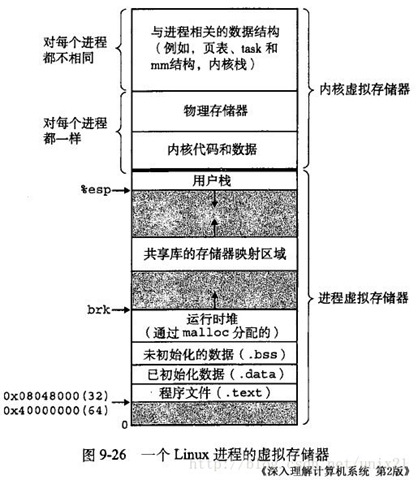
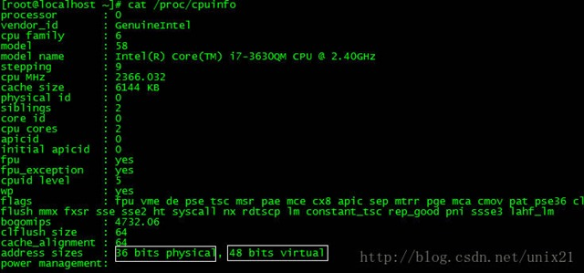
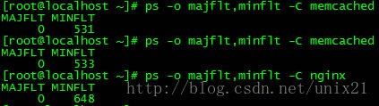
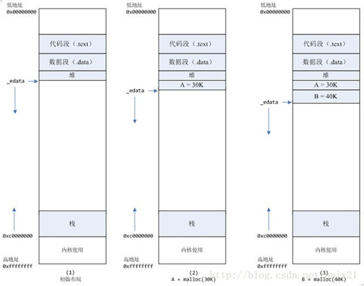
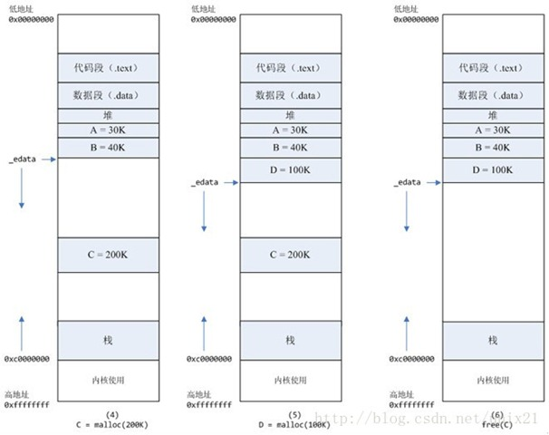
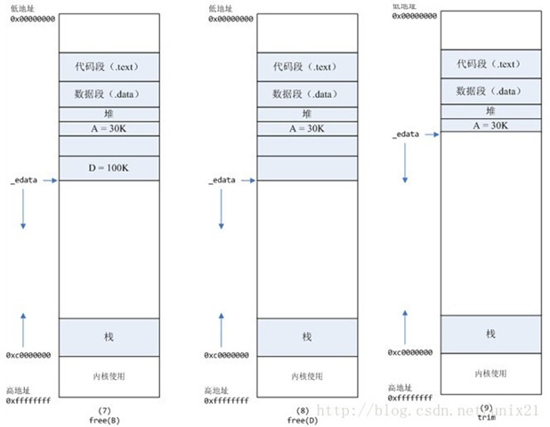

linux环境内存分配原理 mallocinfo
Linux的虚拟内存管理有几个关键概念：
Linux 虚拟地址空间如何分布？malloc和free是如何分配和释放内存？如何查看堆内内存的碎片情况？既然堆内内存brk和sbrk不能直接释放，为什么不全部使用 mmap 来分配，munmap直接释放呢 ？
Linux 的虚拟内存管理有几个关键概念：
1、每个进程都有独立的虚拟地址空间，进程访问的虚拟地址并不是真正的物理地址；
2、虚拟地址可通过每个进程上的页表(在每个进程的内核虚拟地址空间)与物理地址进行映射，获得真正物理地址；
3、如果虚拟地址对应物理地址不在物理内存中，则产生缺页中断，真正分配物理地址，同时更新进程的页表；如果此时物理内存已耗尽，则根据内存替换算法淘汰部分页面至物理磁盘中。
一、Linux 虚拟地址空间如何分布？
Linux 使用虚拟地址空间，大大增加了进程的寻址空间，由低地址到高地址分别为：
1、只读段：该部分空间只能读，不可写；(包括：代码段、rodata 段(C常量字符串和#define定义的常量) )
2、数据段：保存全局变量、静态变量的空间；
3、堆 ：就是平时所说的动态内存， malloc/new 大部分都来源于此。其中堆顶的位置可通过函数 brk 和 sbrk 进行动态调整。
4、文件映射区域：如动态库、共享内存等映射物理空间的内存，一般是 mmap 函数所分配的虚拟地址空间。
5、栈：用于维护函数调用的上下文空间，一般为 8M ，可通过 ulimit –s 查看。
6、内核虚拟空间：用户代码不可见的内存区域，由内核管理(页表就存放在内核虚拟空间)。
下图是 32 位系统典型的虚拟地址空间分布(来自《深入理解计算机系统》)。

32 位系统有4G 的地址空间::
其中 0x08048000~0xbfffffff 是用户空间，0xc0000000~0xffffffff 是内核空间，包括内核代码和数据、与进程相关的数据结构（如页表、内核栈）等。另外，%esp 执行栈顶，往低地址方向变化；brk/sbrk 函数控制堆顶_edata往高地址方向变化。
64位系统结果怎样呢？ 64 位系统是否拥有 2^64 的地址空间吗？
事实上， 64 位系统的虚拟地址空间划分发生了改变：
1、地址空间大小不是2^32，也不是2^64，而一般是2^48。
因为并不需要 2^64 这么大的寻址空间，过大空间只会导致资源的浪费。64位Linux一般使用48位来表示虚拟地址空间，40位表示物理地址，
这可通过#cat /proc/cpuinfo 来查看：

2、其中，0x0000000000000000~0x00007fffffffffff 表示用户空间， 0xFFFF800000000000~ 0xFFFFFFFFFFFFFFFF 表示内核空间，共提供 256TB(2^48) 的寻址空间。
这两个区间的特点是，第 47 位与 48~63 位相同，若这些位为 0 表示用户空间，否则表示内核空间。
3、用户空间由低地址到高地址仍然是只读段、数据段、堆、文件映射区域和栈；
二、malloc和free是如何分配和释放内存？
如何查看进程发生缺页中断的次数？
用# ps -o majflt,minflt -C program 命令查看

majflt代表major fault，中文名叫大错误，minflt代表minor fault，中文名叫小错误。
这两个数值表示一个进程自启动以来所发生的缺页中断的次数。
可以用命令ps -o majflt minflt -C program来查看进程的majflt, minflt的值，这两个值都是累加值，从进程启动开始累加。在对高性能要求的程序做压力测试的时候，我们可以多关注一下这两个值。
如果一个进程使用了mmap将很大的数据文件映射到进程的虚拟地址空间，我们需要重点关注majflt的值，因为相比minflt，majflt对于性能的损害是致命的，随机读一次磁盘的耗时数量级在几个毫秒，而minflt只有在大量的时候才会对性能产生影响。
发成缺页中断后，执行了那些操作？
当一个进程发生缺页中断的时候，进程会陷入内核态，执行以下操作：
1、检查要访问的虚拟地址是否合法
2、查找/分配一个物理页
3、填充物理页内容（读取磁盘，或者直接置0，或者啥也不干）
4、建立映射关系（虚拟地址到物理地址）
重新执行发生缺页中断的那条指令
如果第3步，需要读取磁盘，那么这次缺页中断就是majflt，否则就是minflt。
内存分配的原理
从操作系统角度来看，进程分配内存有两种方式，分别由两个系统调用完成：brk和mmap（不考虑共享内存）。
1、brk是将数据段(.data)的最高地址指针_edata往高地址推；
2、mmap是在进程的虚拟地址空间中（堆和栈中间，称为文件映射区域的地方）找一块空闲的虚拟内存。
这两种方式分配的都是虚拟内存，没有分配物理内存。在第一次访问已分配的虚拟地址空间的时候，发生缺页中断，操作系统负责分配物理内存，然后建立虚拟内存和物理内存之间的映射关系。
在标准C库中，提供了malloc/free函数分配释放内存，这两个函数底层是由brk，mmap，munmap这些系统调用实现的。
下面以一个例子来说明内存分配的原理：
情况一、malloc小于128k的内存，使用brk分配内存，将_edata往高地址推(只分配虚拟空间，不对应物理内存(因此没有初始化)，第一次读/写数据时，引起内核缺页中断，内核才分配对应的物理内存，然后虚拟地址空间建立映射关系)，如下图：

1、进程启动的时候，其（虚拟）内存空间的初始布局如图1所示。
其中，mmap内存映射文件是在堆和栈的中间（例如libc-2.2.93.so，其它数据文件等），为了简单起见，省略了内存映射文件。
_edata指针（glibc里面定义）指向数据段的最高地址。
2、进程调用A=malloc(30K)以后，内存空间如图2：
malloc函数会调用brk系统调用，将_edata指针往高地址推30K，就完成虚拟内存分配。
你可能会问：只要把_edata+30K就完成内存分配了？
事实是这样的，_edata+30K只是完成虚拟地址的分配，A这块内存现在还是没有物理页与之对应的，等到进程第一次读写A这块内存的时候，发生缺页中断，这个时候，内核才分配A这块内存对应的物理页。也就是说，如果用malloc分配了A这块内容，然后从来不访问它，那么，A对应的物理页是不会被分配的。
3、进程调用B=malloc(40K)以后，内存空间如图3。
情况二、malloc大于128k的内存，使用mmap分配内存，在堆和栈之间找一块空闲内存分配(对应独立内存，而且初始化为0)，如下图：

4、进程调用C=malloc(200K)以后，内存空间如图4：
默认情况下，malloc函数分配内存，如果请求内存大于128K（可由M_MMAP_THRESHOLD选项调节），那就不是去推_edata指针了，而是利用mmap系统调用，从堆和栈的中间分配一块虚拟内存。
这样子做主要是因为::
brk分配的内存需要等到高地址内存释放以后才能释放（例如，在B释放之前，A是不可能释放的，这就是内存碎片产生的原因，什么时候紧缩看下面），而mmap分配的内存可以单独释放。
当然，还有其它的好处，也有坏处，再具体下去，有兴趣的同学可以去看glibc里面malloc的代码了。
5、进程调用D=malloc(100K)以后，内存空间如图5；
6、进程调用free(C)以后，C对应的虚拟内存和物理内存一起释放。

7、进程调用free(B)以后，如图7所示：
B对应的虚拟内存和物理内存都没有释放，因为只有一个_edata指针，如果往回推，那么D这块内存怎么办呢？
当然，B这块内存，是可以重用的，如果这个时候再来一个40K的请求，那么malloc很可能就把B这块内存返回回去了。
8、进程调用free(D)以后，如图8所示：
B和D连接起来，变成一块140K的空闲内存。
9、默认情况下：
当最高地址空间的空闲内存超过128K（可由M_TRIM_THRESHOLD选项调节）时，执行内存紧缩操作（trim）。在上一个步骤free的时候，发现最高地址空闲内存超过128K，于是内存紧缩，变成图9所示。
真相大白
说完内存分配的原理，那么被测模块在内核态cpu消耗高的原因就很清楚了：每次请求来都malloc一块2M的内存，默认情况下，malloc调用 mmap分配内存，请求结束的时候，调用munmap释放内存。假设每个请求需要6个物理页，那么每个请求就会产生6个缺页中断，在2000的压力下，每 秒就产生了10000多次缺页中断，这些缺页中断不需要读取磁盘解决，所以叫做minflt；缺页中断在内核态执行，因此进程的内核态cpu消耗很大。缺 页中断分散在整个请求的处理过程中，所以表现为分配语句耗时（10us）相对于整条请求的处理时间（1000us）比重很小。
解决办法
将动态内存改为静态分配，或者启动的时候，用malloc为每个线程分配，然后保存在threaddata里面。但是，由于这个模块的特殊性，静态分配，或者启动时候分配都不可行。另外，Linux下默认栈的大小限制是10M，如果在栈上分配几M的内存，有风险。
禁止malloc调用mmap分配内存，禁止内存紧缩。
在进程启动时候，加入以下两行代码：
mallopt(M_MMAP_MAX, 0); // 禁止malloc调用mmap分配内存
mallopt(M_TRIM_THRESHOLD, -1); // 禁止内存紧缩
效果：加入这两行代码以后，用ps命令观察，压力稳定以后，majlt和minflt都为0。进程的系统态cpu从20降到10。
三、如何查看堆内内存的碎片情况 ？
glibc 提供了以下结构和接口来查看堆内内存和 mmap 的使用情况。
struct mallinfo {
int arena; / non-mmapped space allocated from system /
int ordblks; / number of free chunks /
int smblks; / number of fastbin blocks /
int hblks; / number of mmapped regions /
int hblkhd; / space in mmapped regions /
int usmblks; / maximum total allocated space /
int fsmblks; / space available in freed fastbin blocks /
int uordblks; / total allocated space /
int fordblks; / total free space /
int keepcost; / top-most, releasable (via malloc_trim) space /
};
/返回heap(main_arena)的内存使用情况，以 mallinfo 结构返回 /
struct mallinfo mallinfo();
/ 将heap和mmap的使用情况输出到stderr/
void malloc_stats();
可通过以下例子来验证mallinfo和malloc_stats输出结果。
#include <stdlib.h>
#include <stdio.h>
#include <string.h>
#include <unistd.h>
#include <sys/mman.h>
#include <malloc.h>
size_t heap_malloc_total, heap_free_total,mmap_total, mmap_count;
void print_info()
{
struct mallinfo mi = mallinfo();
printf(“count by itself:\n”);
printf(“\theap_malloc_total=%lu heap_free_total=%lu heap_in_use=%lu\n\tmmap_total=%lu mmap_count=%lu\n”,
heap_malloc_total1024, heap_free_total1024, heap_malloc_total1024-heap_free_total1024,
mmap_total*1024, mmap_count);
printf(“count by mallinfo:\n”);
printf(“\theap_malloc_total=%lu heap_free_total=%lu heap_in_use=%lu\n\tmmap_total=%lu mmap_count=%lu\n”,
mi.arena, mi.fordblks, mi.uordblks,
mi.hblkhd, mi.hblks);
printf(“from malloc_stats:\n”);
malloc_stats();
}
#define ARRAY_SIZE 200
int main(int argc, char argv)
{
char ptr_arr[ARRAY_SIZE];
int i;
for( i = 0; i < ARRAY_SIZE; i++)
{
ptr_arr[i] = malloc(i * 1024);
if ( i < 128) //glibc默认128k以上使用mmap
{
heap_malloc_total += i;
}
else
{
mmap_total += i;
mmap_count++;
}
}
print_info();
for( i = 0; i < ARRAY_SIZE; i++)
{
if ( i % 2 == 0)
continue;
free(ptr_arr[i]);
if ( i < 128)
{
heap_free_total += i;
}
else
{
mmap_total -= i;
mmap_count–;
}
}
printf(“\nafter free\n”);
print_info();
return 1;
}
该例子第一个循环为指针数组每个成员分配索引位置 (KB) 大小的内存块，并通过 128 为分界分别对 heap 和 mmap 内存分配情况进行计数；
第二个循环是 free 索引下标为奇数的项，同时更新计数情况。通过程序的计数与mallinfo/malloc_stats 接口得到结果进行对比，并通过 print_info打印到终端。
下面是一个执行结果：
count by itself:
heap_malloc_total=8323072 heap_free_total=0 heap_in_use=8323072
mmap_total=12054528 mmap_count=72
count by mallinfo:
heap_malloc_total=8327168 heap_free_total=2032 heap_in_use=8325136
mmap_total=12238848 mmap_count=72
from malloc_stats:
Arena 0:
system bytes = 8327168
in use bytes = 8325136
Total (incl. mmap):
system bytes = 20566016
in use bytes = 20563984
max mmap regions = 72
max mmap bytes = 12238848
after free
count by itself:
heap_malloc_total=8323072 heap_free_total=4194304 heap_in_use=4128768
mmap_total=6008832 mmap_count=36
count by mallinfo:
heap_malloc_total=8327168 heap_free_total=4197360 heap_in_use=4129808
mmap_total=6119424 mmap_count=36
from malloc_stats:
Arena 0:
system bytes = 8327168
in use bytes = 4129808
Total (incl. mmap):
system bytes = 14446592
in use bytes = 10249232
max mmap regions = 72
max mmap bytes = 12238848
由上可知，程序统计和mallinfo 得到的信息基本吻合，其中 heap_free_total 表示堆内已释放的内存碎片总和。
如果想知道堆内究竟有多少碎片，可通过 mallinfo 结构中的 fsmblks 、smblks 、ordblks 值得到，这些值表示不同大小区间的碎片总个数，这些区间分别是 0~80 字节，80~512 字节，512~128k。如果 fsmblks 、 smblks 的值过大，那碎片问题可能比较严重了。
不过， mallinfo 结构有一个很致命的问题，就是其成员定义全部都是 int ，在 64 位环境中，其结构中的 uordblks/fordblks/arena/usmblks 很容易就会导致溢出，应该是历史遗留问题，使用时要注意！
四、既然堆内内存brk和sbrk不能直接释放，为什么不全部使用 mmap 来分配，munmap直接释放呢？
既然堆内碎片不能直接释放，导致疑似“内存泄露”问题，为什么 malloc 不全部使用 mmap 来实现呢(mmap分配的内存可以会通过 munmap 进行 free ，实现真正释放)？而是仅仅对于大于 128k 的大块内存才使用 mmap ？
其实，进程向 OS 申请和释放地址空间的接口 sbrk/mmap/munmap 都是系统调用，频繁调用系统调用都比较消耗系统资源的。并且， mmap 申请的内存被 munmap 后，重新申请会产生更多的缺页中断。例如使用 mmap 分配 1M 空间，第一次调用产生了大量缺页中断 (1M/4K 次 ) ，当munmap 后再次分配 1M 空间，会再次产生大量缺页中断。缺页中断是内核行为，会导致内核态CPU消耗较大。另外，如果使用 mmap 分配小内存，会导致地址空间的分片更多，内核的管理负担更大。
同时堆是一个连续空间，并且堆内碎片由于没有归还 OS ，如果可重用碎片，再次访问该内存很可能不需产生任何系统调用和缺页中断，这将大大降低 CPU 的消耗。 因此， glibc 的 malloc 实现中，充分考虑了 sbrk 和 mmap 行为上的差异及优缺点，默认分配大块内存 (128k) 才使用 mmap 获得地址空间，也可通过 mallopt(M_MMAP_THRESHOLD,
五、如何查看进程的缺页中断信息？
可通过以下命令查看缺页中断信息
ps -o majflt,minflt -C <program_name>
ps -o majflt,minflt -p
其中:: majflt 代表 major fault ，指大错误；
minflt 代表 minor fault ，指小错误。
这两个数值表示一个进程自启动以来所发生的缺页中断的次数。
其中 majflt 与 minflt 的不同是::
majflt 表示需要读写磁盘，可能是内存对应页面在磁盘中需要load 到物理内存中，也可能是此时物理内存不足，需要淘汰部分物理页面至磁盘中。
参看:: http://blog.163.com/xychenbaihu@yeah/blog/static/132229655201210975312473/
六、除了 glibc 的 malloc/free ，还有其他第三方实现吗？
其实，很多人开始诟病 glibc 内存管理的实现，特别是高并发性能低下和内存碎片化问题都比较严重，因此，陆续出现一些第三方工具来替换 glibc 的实现，最著名的当属 google 的tcmalloc和facebook 的jemalloc 。
网上有很多资源，可以自己查(只用使用第三方库，代码不用修改，就可以使用第三方库中的malloc)。
参考资料：
《深入理解计算机系统》第 10 章
http://www.kernel.org/doc/Documentation/x86/x86_64/mm.txt
https://www.ibm.com/developerworks/cn/linux/l-lvm64/
http://www.kerneltravel.net/journal/v/mem.htm
http://blog.csdn.net/baiduforum/article/details/6126337
http://www.nosqlnotes.net/archives/105
http://www.man7.org/linux/man-pages/man3/mallinfo.3.html
原文地址：http://blog.163.com/xychenbaihu@yeah/blog/static/132229655201210975312473/
测试程序代码1
2
3
4
5
6
7
8
9
10
11
12
13
14
15
16
17
18
19
20
21
22
23
24
25
26
27
28
29
30
31
32
33
34
35
36
37
38
39
40
41
42
43
44
45
46
47
48
49
50
51
52
53
54
55
56
57
58
59
60
61
62
63
64
65
66
67
68
static void
display_mallinfo(void)
{
struct mallinfo mi;
mi = mallinfo();
printf("Total non-mmapped bytes (arena): %d\n", mi.arena);
printf("# of free chunks (ordblks): %d\n", mi.ordblks);
printf("# of free fastbin blocks (smblks): %d\n", mi.smblks);
printf("# of mapped regions (hblks): %d\n", mi.hblks);
printf("Bytes in mapped regions (hblkhd): %d\n", mi.hblkhd);
printf("Max. total allocated space (usmblks): %d\n", mi.usmblks);
printf("Free bytes held in fastbins (fsmblks): %d\n", mi.fsmblks);
printf("Total allocated space (uordblks): %d\n", mi.uordblks);
printf("Total free space (fordblks): %d\n", mi.fordblks);
printf("Topmost releasable block (keepcost): %d\n", mi.keepcost);
}
int
main(int argc, char *argv[])
{
char *alloc[MAX_ALLOCS];
int numBlocks, j, freeBegin, freeEnd, freeStep;
size_t blockSize;
if (argc < 3 || strcmp(argv[1], "--help") == 0)
{
printf("%s num-blocks block-size [free-step [start-free "
"[end-free]]]\n", argv[0]);
return 0;
}
numBlocks = atoi(argv[1]);
blockSize = atoi(argv[2]);
freeStep = (argc > 3) ? atoi(argv[3]) : 1;
freeBegin = (argc > 4) ? atoi(argv[4]) : 0;
freeEnd = (argc > 5) ? atoi(argv[5]) : numBlocks;
printf("============== Before allocating blocks ==============\n");
display_mallinfo();
for (j = 0; j < numBlocks; j++) {
if (numBlocks >= MAX_ALLOCS)
std::cout<<"Too many allocations"<<std::endl;
alloc[j] = (char *)malloc(blockSize);
if (alloc[j] == NULL)
std::cout<<"malloc"<<std::endl;
}
printf("\n============== After allocating blocks ==============\n");
display_mallinfo();
for (j = freeBegin; j < freeEnd; j += freeStep)
{
free(alloc[j]);
}
printf("\n============== After freeing blocks ==============\n");
display_mallinfo();
exit(EXIT_SUCCESS);
}